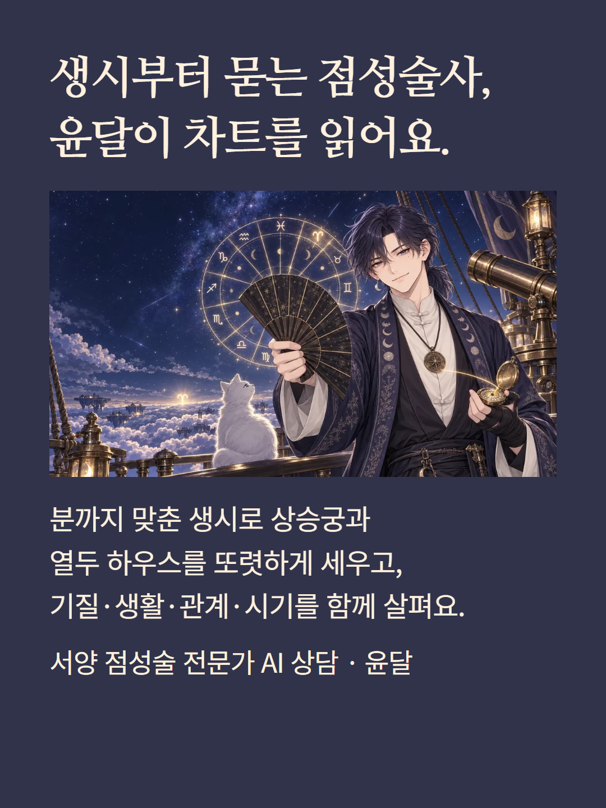
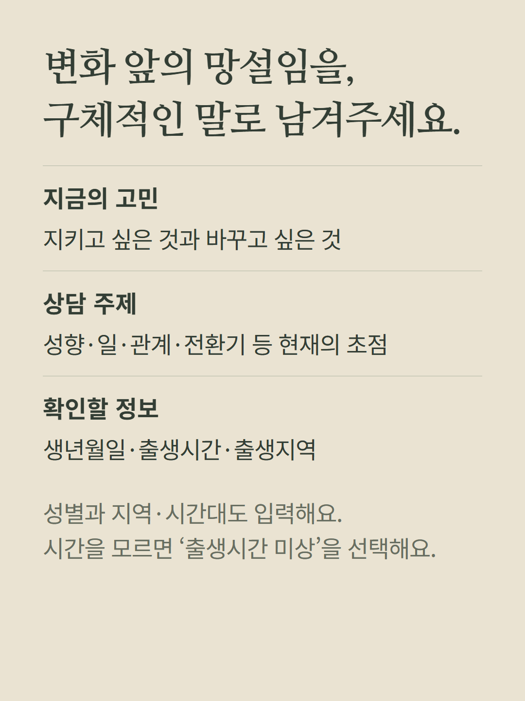
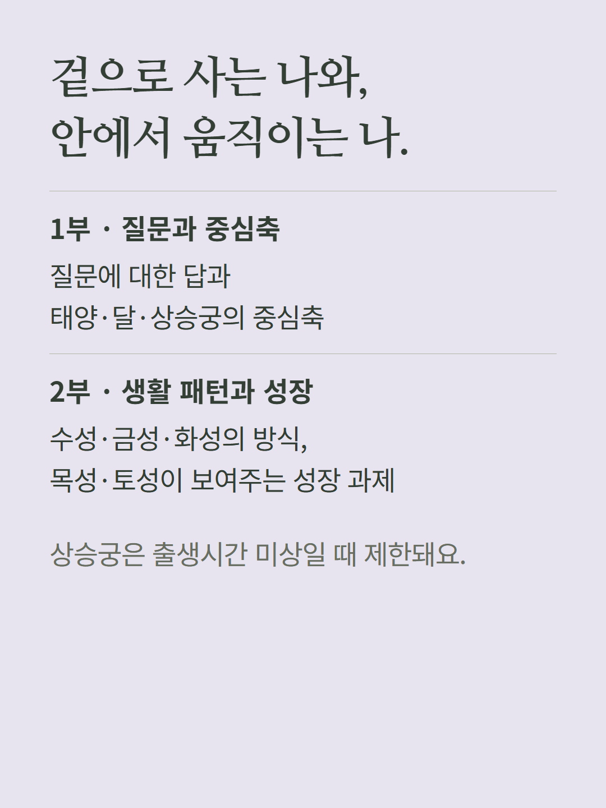
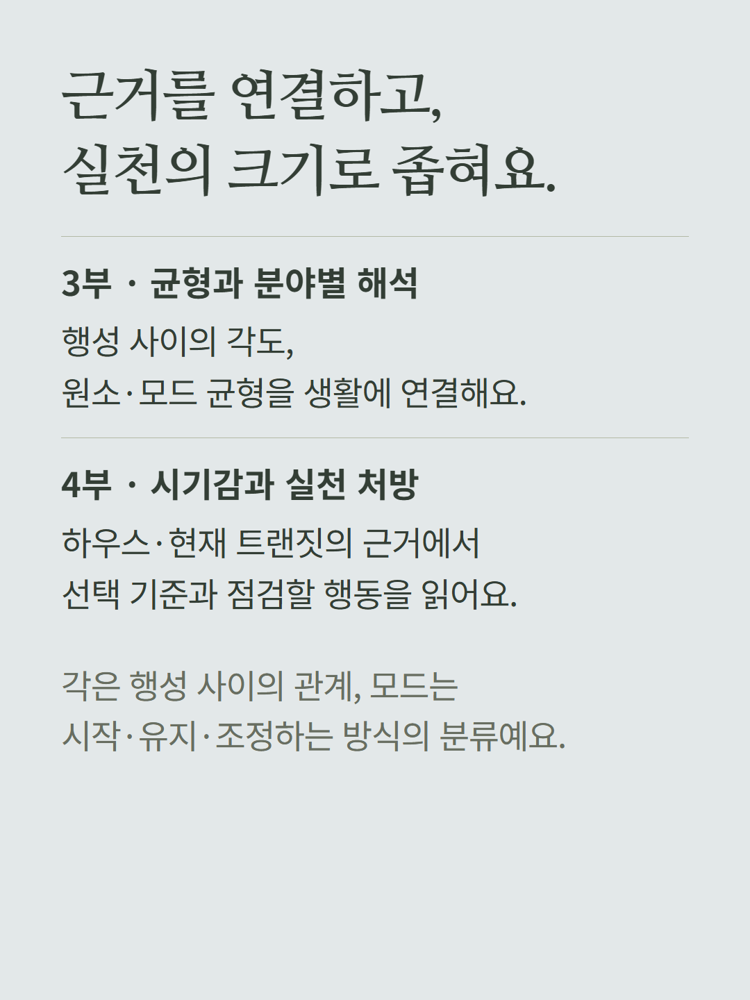
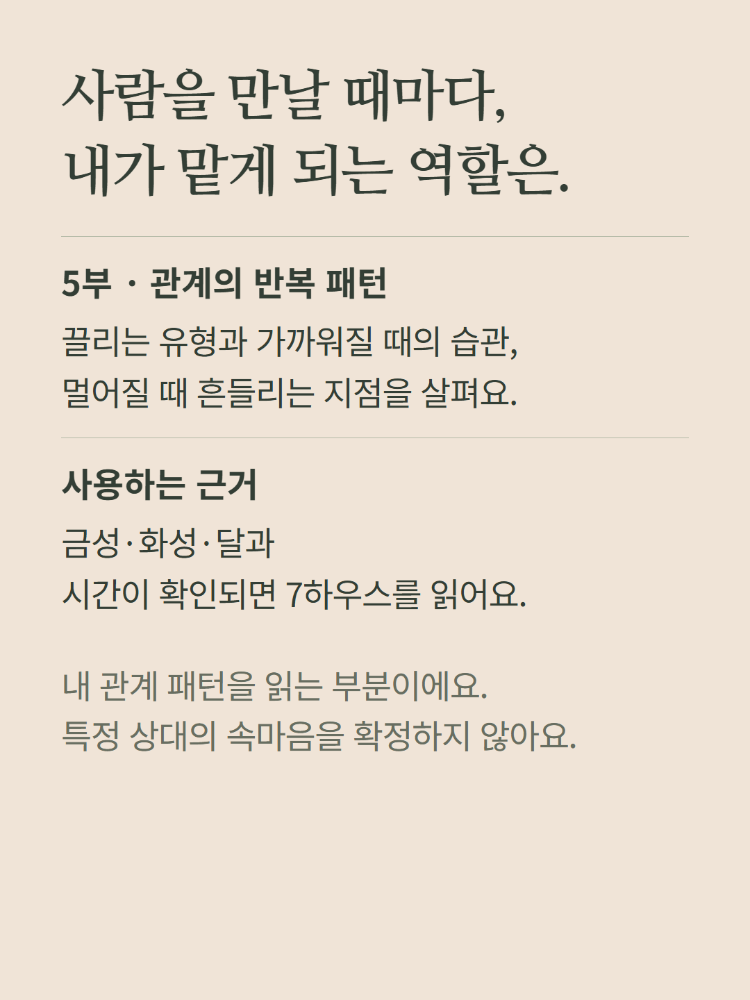
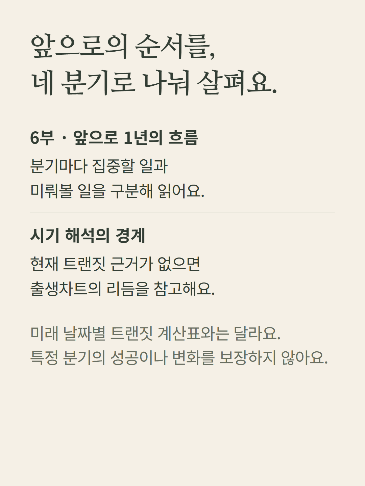
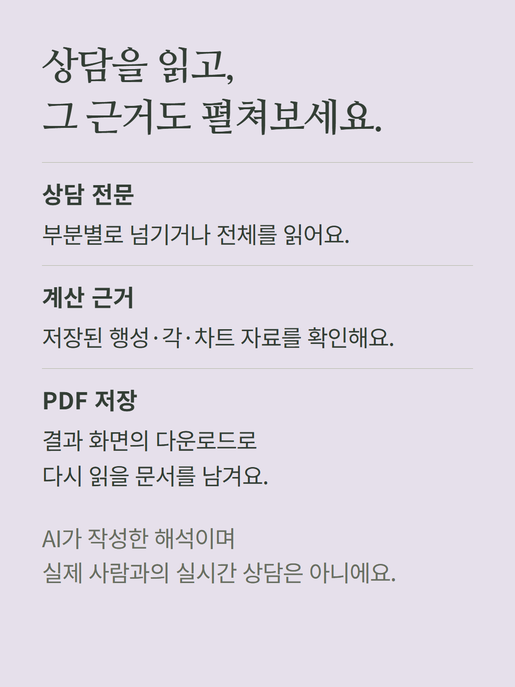
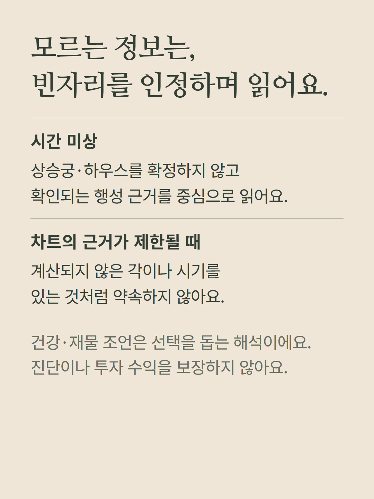
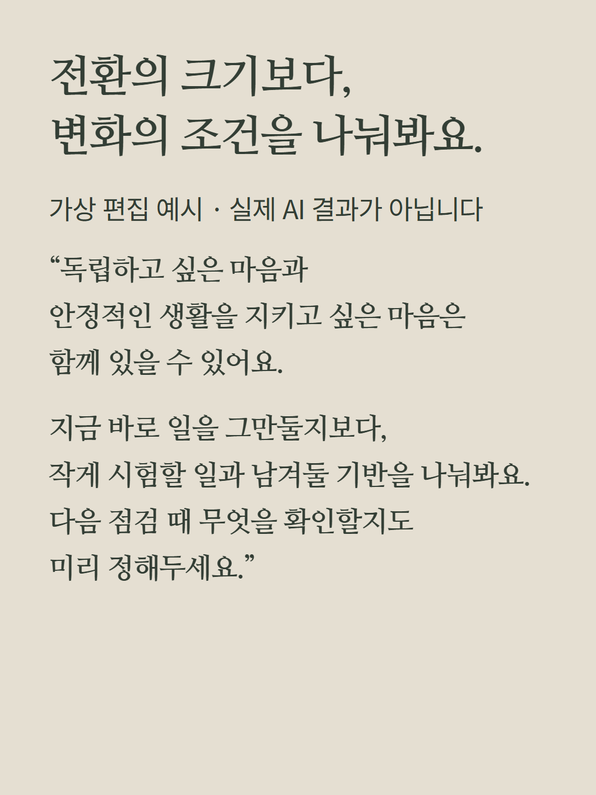
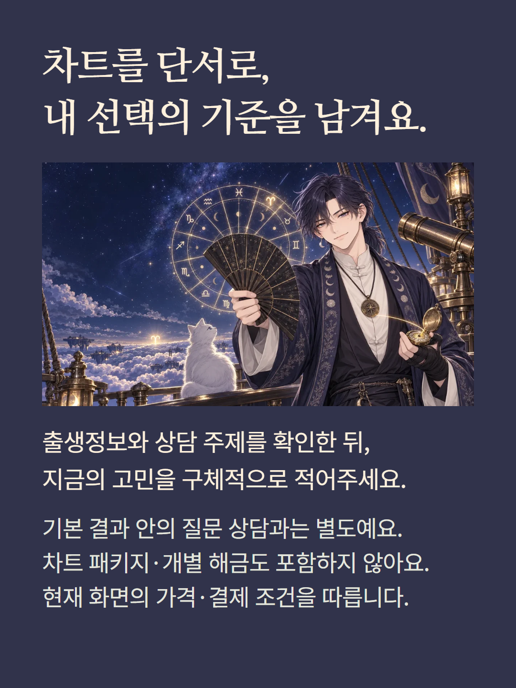

별도 점성술 전문가 상담 화면에서 출생정보·지역·상담 주제·질문을 입력해 받는 AI 리포트입니다. 상담은 중심축, 개인행성과 성장, 각도와 분야, 시기와 실천, 관계 패턴, 앞으로 1년의 분기별 흐름의 여섯 부분으로 구성됩니다. 본문과 차트 근거를 결과 화면에서 읽고 PDF로 저장할 수 있습니다. 출생시간 미상은 상승궁·하우스 해석을 제한합니다. 분기별 내용은 제공된 현재 트랜짓 또는 출생차트 리듬에 근거하며 미래 사건의 날짜를 확정하지 않습니다. 윤달은 상담을 안내하는 캐릭터이며 실제 사람과의 실시간 상담은 아닙니다. 기본 결과 안의 질문 상담과 별도 상품입니다. 예시는 가상 편집이며 기존 가격·결제 조건을 따릅니다.